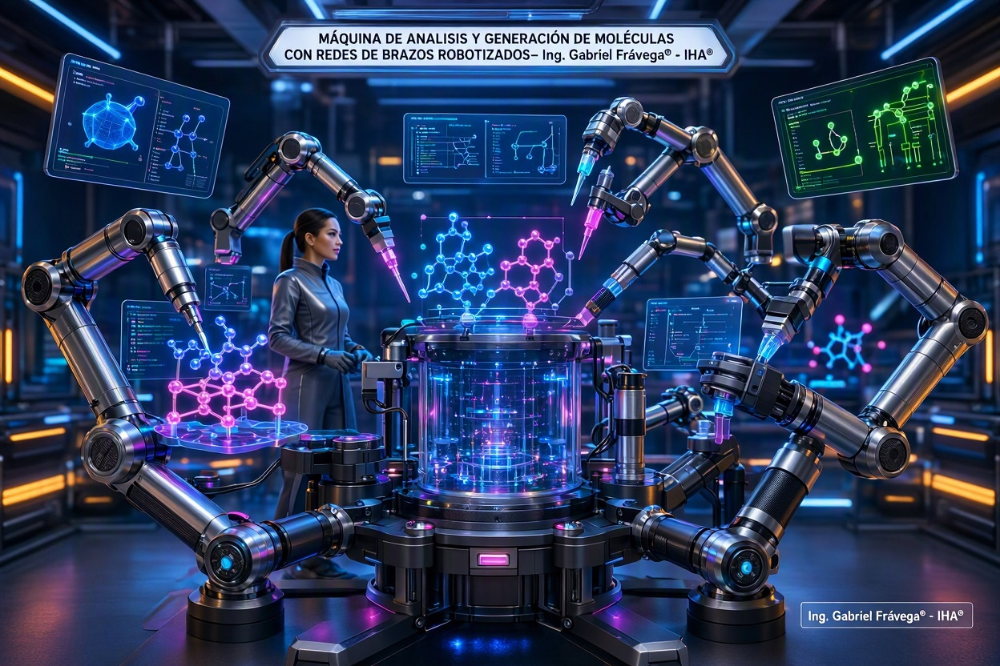
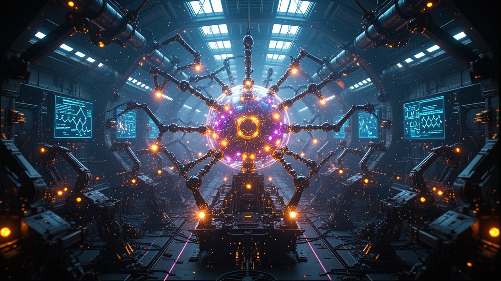
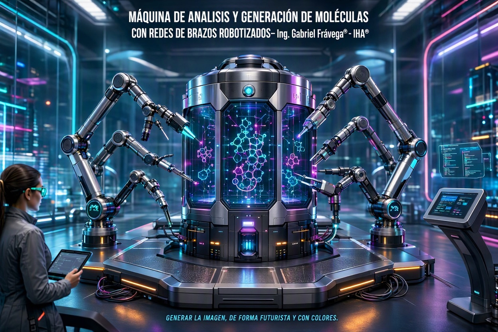
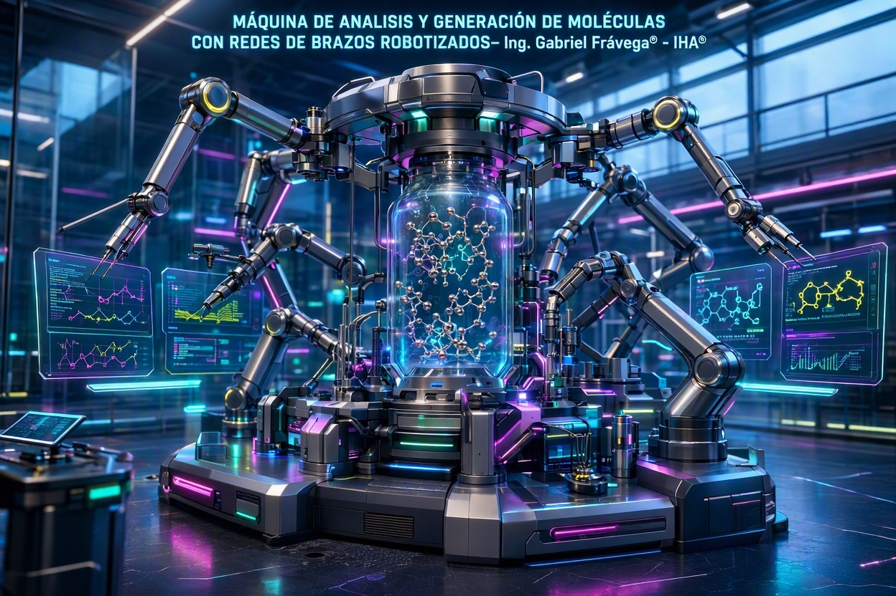
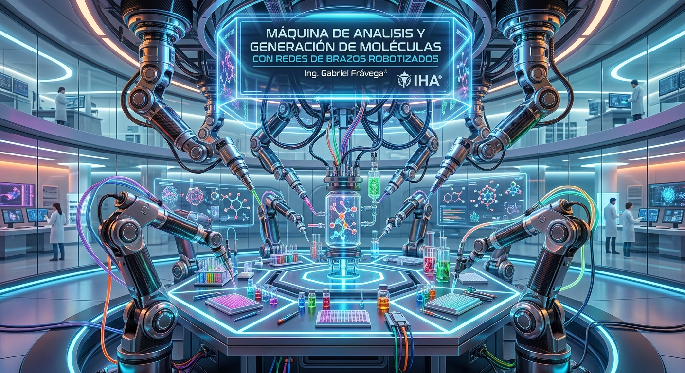
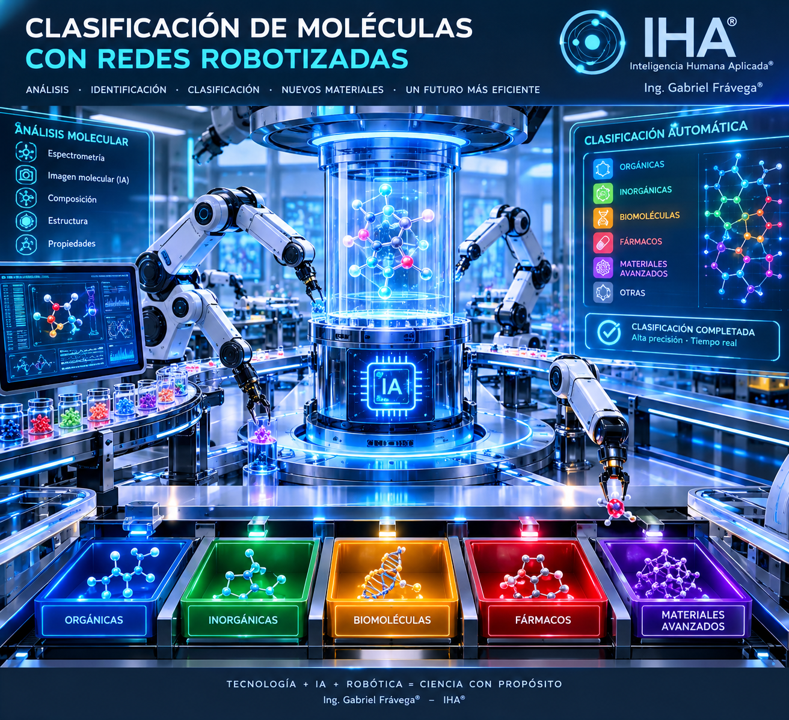
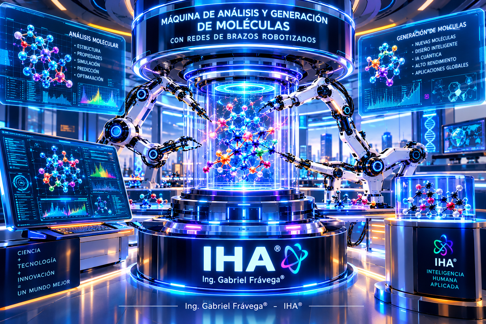
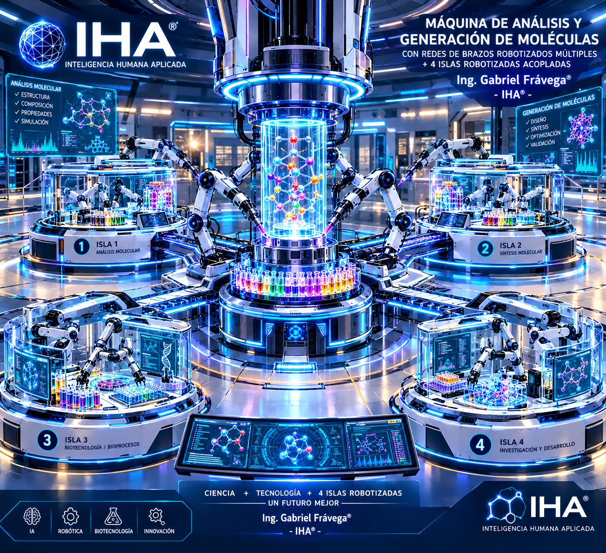
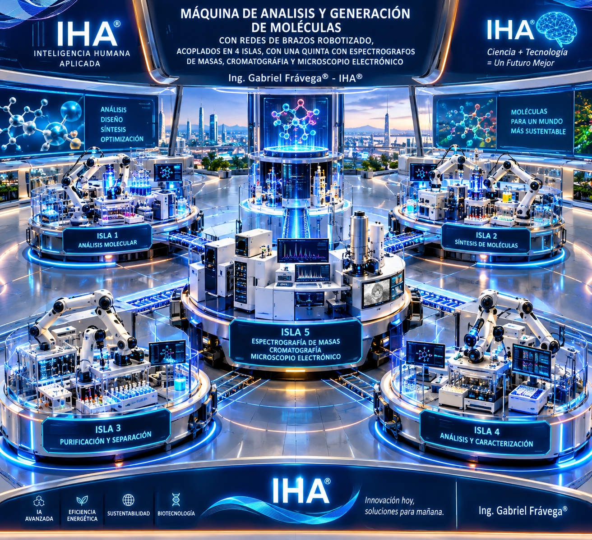

La Máquina de ANÁLISIS Y GENERACIÓN BIOMOLECULAR® - PROYECTADA por el Ing. Gabriel Frávega® - IHA®
Utilizando Motores Tecnológicos con Marcos Referenciales y el TFC®, bajo control de dispositivos comandados por mini-islas robotizadas con ciberseguridad encriptada(2026), arquitectura sistémica de bases de datos multideimensionales distribuidas, clasificados y específicas
Mientras se envían centros de datos al espacio, al océano, a cavernas, a glaciares, a Marte, a Plutón o a una galaxia cercana, todavía no se entiende para qué los utilizarán. Mientras tanto, un resfrío común espera en la farmacia de la esquina con un paracetamol (y no precisamente elaborado por una "IA"). El proyecto, la ingeniería y el kernel, se encuentran fuera de línea, con protecciones de múltiples capas de seguridad, en regiones no especificadas. Con o sin regulación —como si ese fuera el verdadero problema de la humanidad—, cuatro o cinco magnates salen todos los días por las redes sociales, como profetas alienígenas, a sentenciar, alertar o provocar miedo en los humanos. Señalan cómo influirá lo que ellos mismos han creado, desarrollado y, por sobre todo, vendido en acciones por billones y en activos digitales que aportan muy poco a la economía real. La plata que se convierte en acciones no siempre va a la economía real; simplemente alimenta las alforjas de estos profetas de la ilusión, quienes no se hacen cargo de que, si diseñaron y construyeron algo sin los controles mínimos de seguridad que exige la ingeniería en cualquier parte del mundo, pretenden luego que más de 200 países aprueben esas bestialidades. Como soberanos del mundo, pretenden "dictar, como elegidos vaya a saber por quiénes", qué se debe hacer, como si ellos mismos fueran agentes autónomos a nivel mundial... ¡¿De verdad?! El futuro pasa por el conocimiento y su aplicación racional en la tecnología, no en camionadas de algoritmos y datos (encima copiados a otros mortales). No pasa por iluminados que representan a Julio Verne. La ley también los espera, pero no para regular.
05/10/2026
Imágenes solo ilustrativa de "IA", a los fines de representar el proyecto de la máquina, desarrollado bajo estrictos protocolos de seguridad, en servidores/procesos fuera de línea.
IHA® - Máquina de Análisis y Generación molecular - Ing. Gabriel Frávega®
11 de octubre de 2026 - Ing. Gabriel Frávega® - DATACIÓN FORENSE - Todos los derechos reservados









11 de octubre de 2026 - Ing. Gabriel Frávega® - DATACIÓN FORENSE

